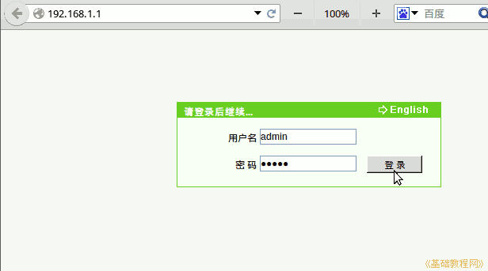

硬件基础教程
作者：TeliuTe 来源：基础教程网
路由器可以多台电脑共享上网，无线路由器可以作为wifi连接手机；
1、宽带连接路由器设置
1）将路由器的WAN口和宽带猫通过网线连接起来，其他电脑接到LAN口上，开启路由器，
在电脑上打开IE或其他浏览器，在地址栏输入192.168.1.1按回车，看一下路由器背面，也可能是192.168.0.1；

2）输入用户名admin密码admin点登录后进入路由器设置界面，点“网络－宽带连接设置”，
在右边新建一个连接，输入连接名称、宽带账号的用户名和密码，点创建；
3）稍等，点左侧栏的“状态－网络接口信息”，可以查看连接状态；
4）点左侧栏的“网络－WLAN设置”，进入无线路由器设置，点右边的“无线开关使能－确定”，开启无线路由器wifi功能；
5）再在左边点SSID设置，输入一个SSID名称，打勾“隐藏”将不能搜索到此wifi，需要在手机上的无线网络中手动添加；
6）在安全设置中，输入密钥，连接此wifi时输入这个密码，至少要8位；
7）手机上连接wifi，依次点“设置-无线网络”，参考：http://teliute.org/mix/TeAndro/lesson16/lesson16.html
2、局域网连接路由器
1）局域网中已经有一个总路由器了，这个要连接到主路由器上，在WAN里设置跟主路由器一致的固定静态IP地址、主路由器的网关；
2）在LAN口设置里，设置本路由器的ip地址，跟主路由器的区分开，另设一个ip地址；
3）设置保存好以后，点主机状态，可以查看连接到本路由器上的主机；
4）点“系统工具－修改登录口令”，可以更改默认的admin口令，以确保路由器安全；
本节学习了路由器、无线wifi设置的基础知识，如果你成功地完成了练习，请继续学习下一课内容；
本教程由86团学校TeliuTe制作|著作权所有
基础教程网：http://teliute.org/
美丽的校园……
转载和引用本站内容，请保留作者和本站链接。